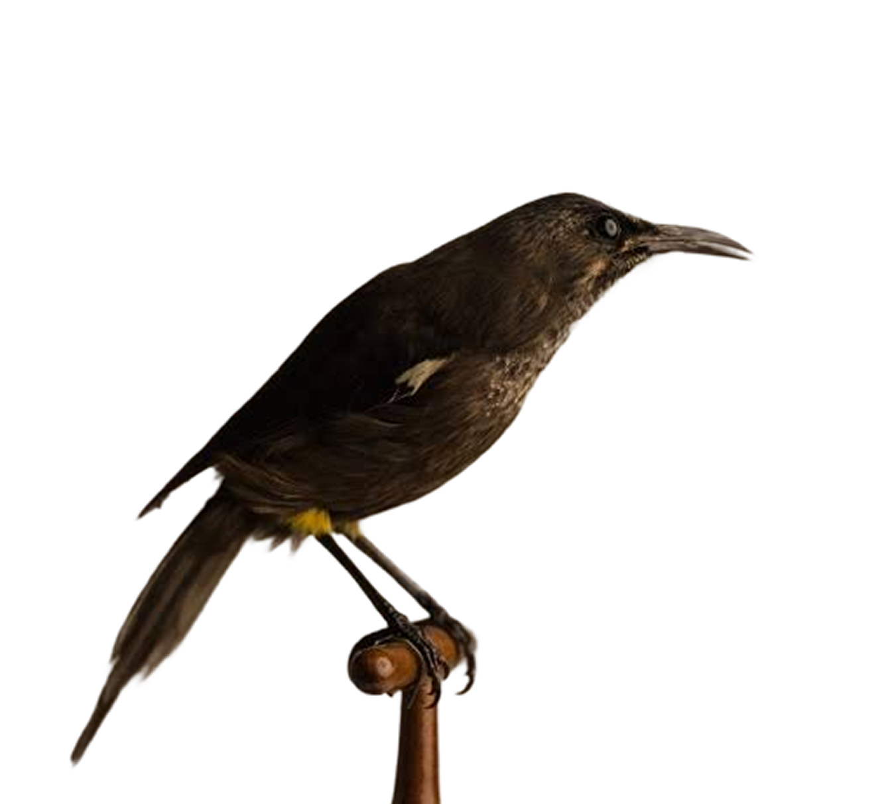
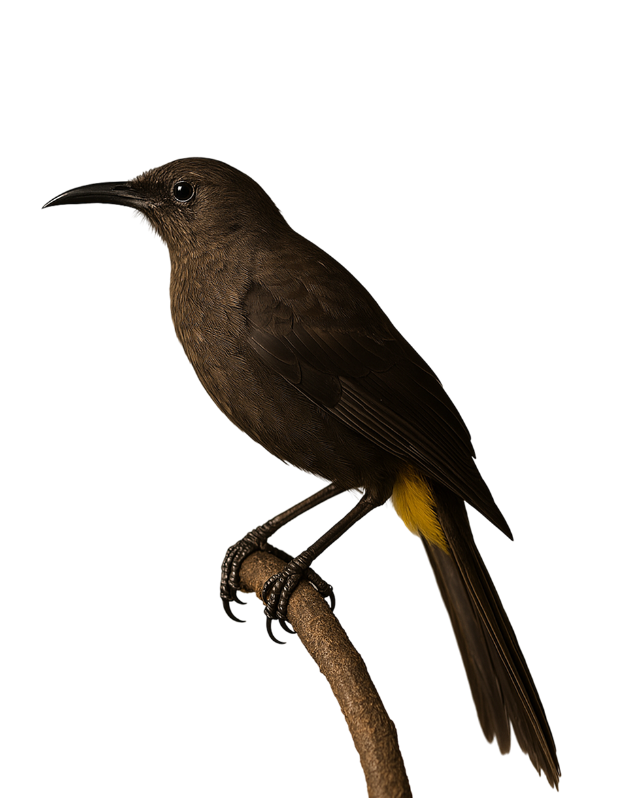
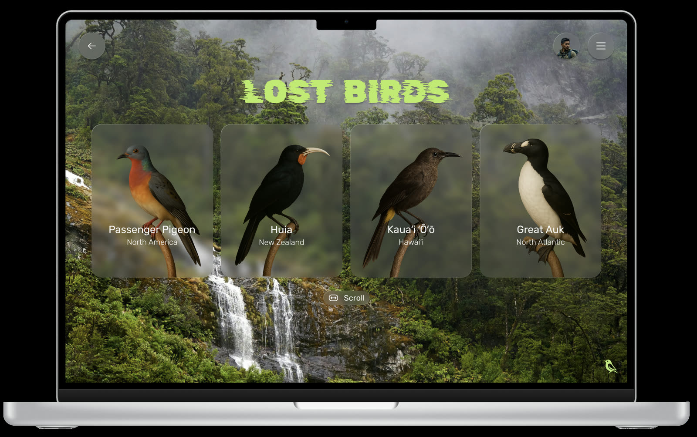
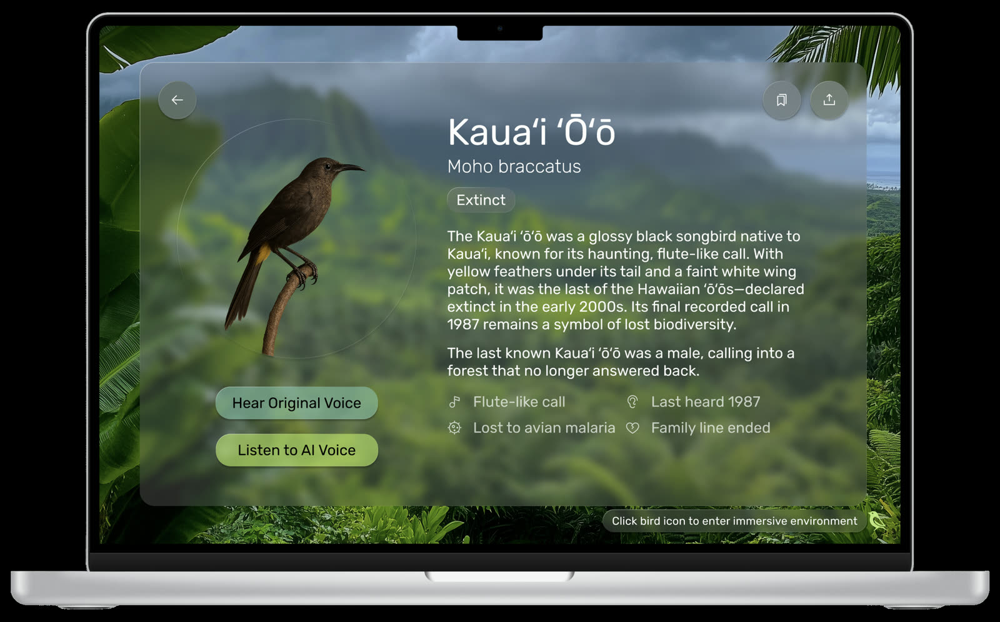
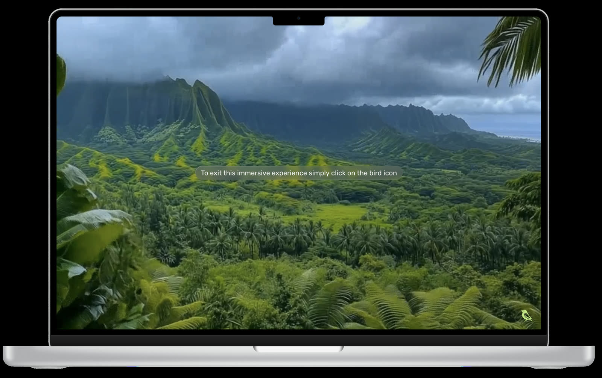
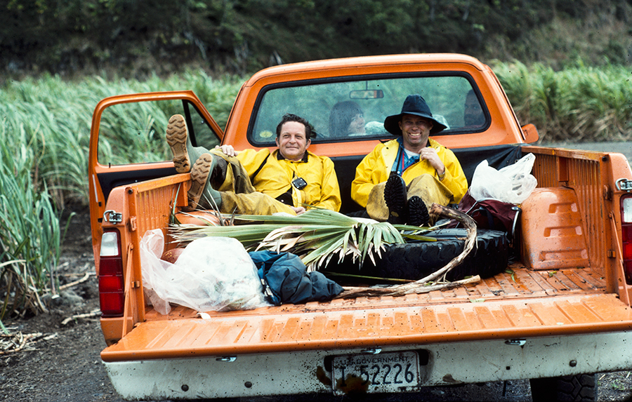
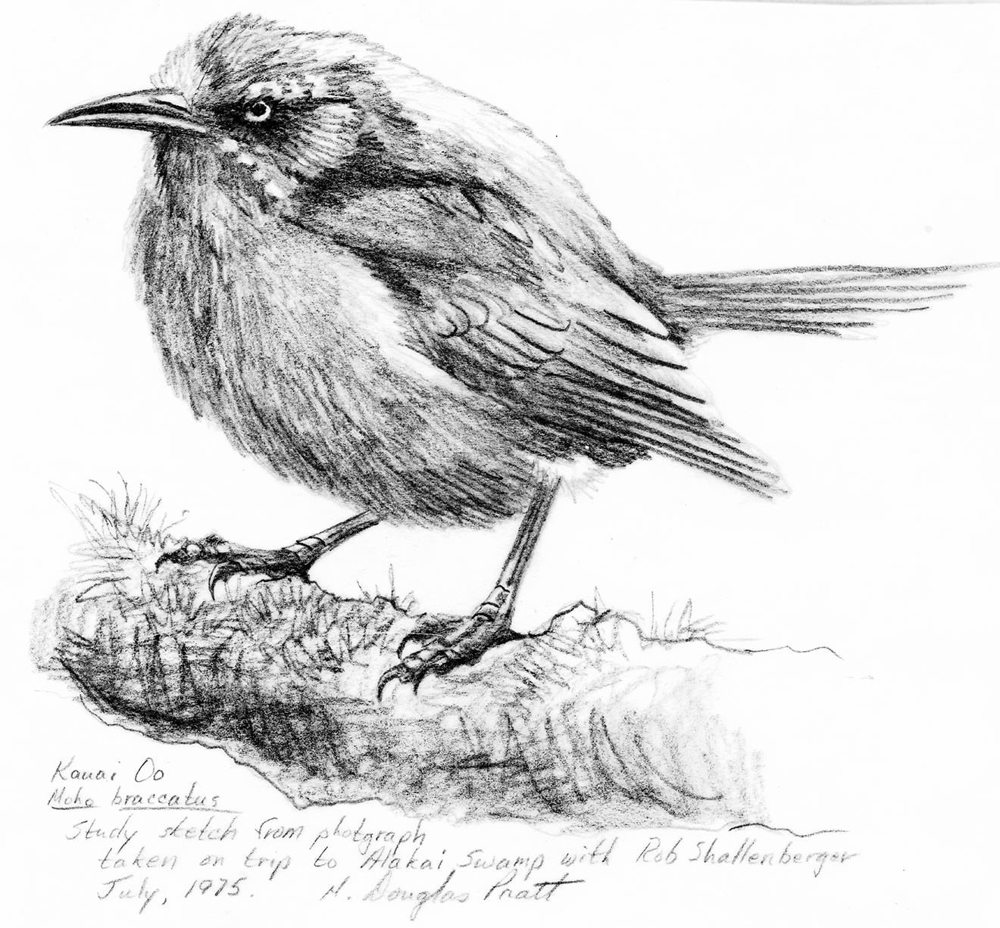
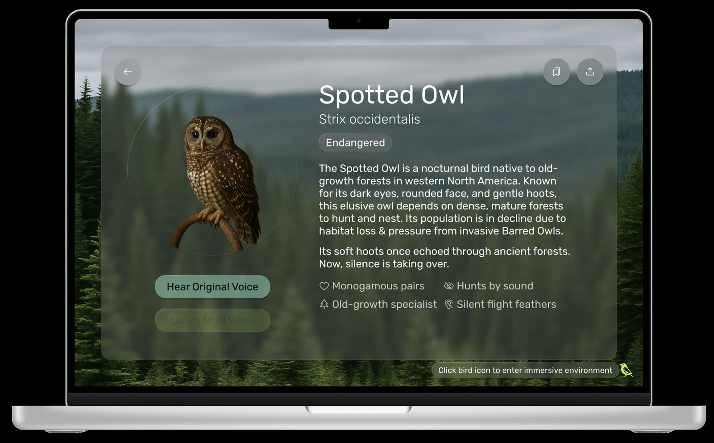

A field guide for birds at the edge of silence + A Figma prototype that almost went extinct itself.
99.9% of all species that have ever lived are extinct.
Lost & Endangered doesn’t ask you to grieve. It asks you to listen.


Audience testing confirmed it: lead with tragedy and people disengage before they connect.
Museums keep the bodies; taxidermy behind glass, specimens in drawers. No publicly accessible archive exists for the voices. No way to hear what was lost.
A voice going silent.
If extinction is silence,
remembering becomes listening.
The main screen opens into four entry points: lost birds, endangered birds, featured ecosystems, and bioacoustics & conservation impact. Each one opens its own scrolling archive.

Every species gets a profile. AI cleans up the recordings that survived + silence honors the ones that didn’t. Flora AI carries the imagery either way.

Choose a habitat. The UI dissolves. You sit inside the sound. Fiordland rain, rainforest canopy, the northwest coast at dusk. A place, not a page.

Drag and drop. Layer bird calls with weather, dawn and dusk ambience, and the silence between. Save your composition as a conservation stamp.

A Wednesday morning, May 1971. Field biologist John Sincock heard a call he’d only ever read about. Within fifteen feet of him, a pair of ‘ō’ō thought extinct for years.
He returned with his wife Renate and a heavier kit. She took the first photos of the species ever captured. Through the summers that followed, Sincock’s team made extensive recordings + hoped.
Knowing the pair might well be the only ones left on the planet, he recorded every detail of their feeding,
— Daniel Lewis, Counting Extinction, The Huntington
flight, and call.
Last seen 1985. Last heard 1987. After many thousands of years, the Kaua’i ’ō’ō was gone. Its entire family line ended with it.
The L&E listening room.

The Spotted Owl was supposed to anchor the endangered species side of the archive. Finding usable audio took much longer than it did for the Kaua’i ’ō’ō.
What I found was hard to hold. Poachers use the owl’s call to locate the remaining birds. A clean recording becomes a way to find them.
The page stayed in the prototype. The audio stayed out.
Some recordings shouldn’t be in a soundscape.

Lost & Endangered finished in Figma. One week later, Figma Make was announced, and vibe coding went baseline. Static prototypes became a kind of taxidermy overnight.
This case story is what happens when I refuse to let a project go quiet.
The research held. The thesis held. Nothing else online pulls these four capabilities together in one public archive: directory, listening, ecosystems, composer. The Kaua’i ’ō’ō is still worth listening to. What changed was the medium.
The version in Figma is the one that almost went extinct. The version in code is the one that keeps breathing.